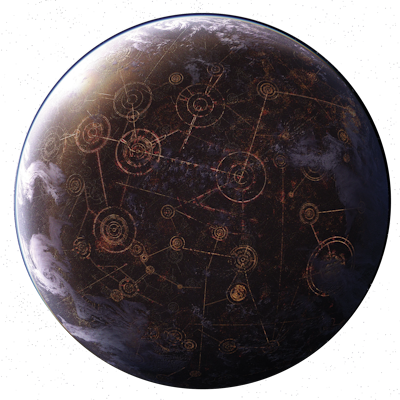
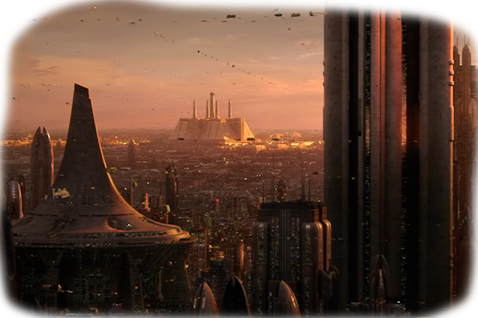
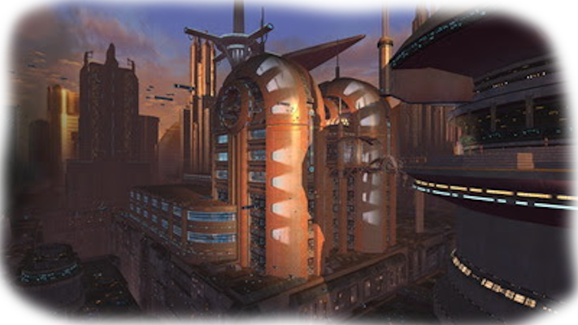
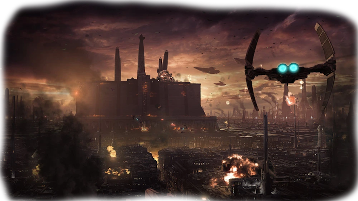
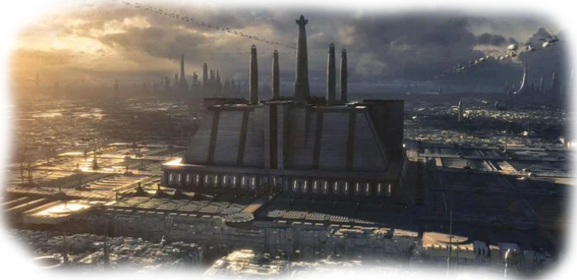
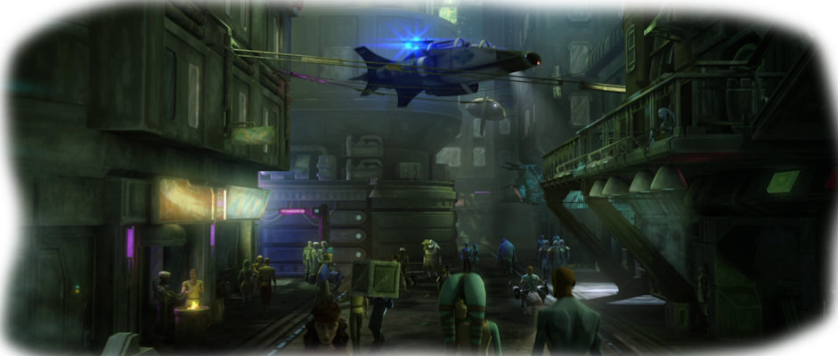

Корусант
«Корусант… вся планета — один большой город».
*Рик Олие*
Корусант - сверкающая планета, которая была расположена в сердце Галактики. Корусант тысячелетиями был политическим центром Галактики, где принимались самые важные решения, затрагивающие жизни триллионов. С зари межзвёздной истории за одним единственным словом «Корусант» скрывалось бесспорное средоточие власти, силы, законности, истории и культуры. В различные времена планета была столицей государств галактического масштаба: Галактической Республики, Галактической Империи, Новой Республики, центром оккупации юужань-вонгов и Галактического Союза. Большое количество торговых маршрутов Галактики: Перлемианский торговый маршрут, Кореллианский путь, Метеллосский торговый маршрут, Коросский магистральный путь и Коридор Досуга — проходили через Корусант, делая его самым богатым миром в Галактике. Неудивительно, что планету, лежавшую в стороне от географического центра галактики, стали считать центром с нулевыми координатами (0,0,0).
В течение правления Галактической Республики планета-город была известна как Галактический город или Республиканский город, во времена Галактической Империи — как Имперский город или Корусант-Сити, во время Новой Республики — как Новореспубликанский город, а в течение вторжения юужань-вонгов — Юужань’тар.
Основные данные Фауна Флора ЛокацииИстория
Дореспубликанское время
Как полагают многие, Корусант изначально был колыбелью человечества. Тысячелетия назад Архитекторы, возможно, переправили человеческую расу с Корусанта на Кореллию для заселения. В древние времена, приблизительно в 200000 ДБЯ, доисторические гуманоиды-таунги и батальоны желлов вели войну за контроль красивым миром. Через сто тысяч лет Корусант был оценён колуми как «примитивное разочарование» несмотря на металлический охват планеты Галактическим городом.
Корусант один из многих миров, завоёванный ракатанской Бесконечной Империей, которая использовала рабов для постройки своего супероружия— «Звёздной кузницы» примерно 30000 ДБЯ. При доминировании ракатанцев, колонизационные попытки людей были ограничены полётами «спящих» кораблей, которые закончились на Альдераане, Скоплении Тион, Сеуле-5, Куате, Альсакане, Аксуме, Анаксисе, Атризии, Метеллосе, Корулаге и множестве других миров. В конечном счёте раса ракатанцев погибла от повальной чумы, приведшей к революции рабов на Корусанте и многих других завоёванных мирах.
В течение следующих двух столетий Корусант был связан гиперпространственными путями с другими Центральными Мирами, включая Кореллию и Дуро. Это было время, когда правительство Корусанта мирно поглощало близлежащую Небесную Империю. В течение этих ранних дореспубликанских лет языки Корусанта и его соседей смешивались, образуя будущий Галактический язык.
Ранняя Республика
В 25053 ДБЯ люди-кореллианцы и дуросы изобрели гипердвигатель, позволивший Корусанту стать столицей галактического союза — Галактической Республики. Планета оставалась столицей Республики в течение двадцати пяти тысяч лет. Вскоре после формирования Республики был нанесён на карту Перлемианский торговый маршрут, связавший Корусант с Оссусом и приведший в Республику рыцарей-джедаев. В следующем тысячелетии на карту был нанесён Кореллианский путь, связавший Корусант с Кореллией и далее. В 12000 ДБЯ на планете был построен известный Галактический музей.
С самого начала Корусант как столица Республики был главной целью многих конфликтов. Самая ранняя среди них была Тионесская война между Благородным союзом Дезевро и Тиона в 24000 ДБЯ, во время которой Корусант был засыпан вакуумными бомбами тионцев. Другие ранние сражения включают Альсаканские конфликты, Дуинуогвуинский спор, Великую гиперпространственную войну, Третий Великий раскол, Революцию дроидов, Великую войну ситхов и Великую галактическую войну.
После опустошения Оссуса Совет джедаев переселился в Храм джедаев на Корусанте, куда с Оссуса были перевезены многие реликвии джедаев. В 3996 ДБЯ было построено Здание Сената, заменившее предыдущее место собраний. Внешность этой массивной структуры пережила преобразование планеты в новый Юужань’тар.
Великая галактическая война
Спустя несколько веков после предполагаемого уничтожения первоначальной Империи выжившие ситхи вернулись из Неизведанных Регионов и развязали полномасштабную войну с Республикой.
Через несколько десятилетий борьбы экономические и военные ресурсы Республики почти иссякли, в то время как Империя только укрепила своё положение. В таких условиях верхом неожиданности для всей галактики оказалось выдвинутое ситхами предложение заключить мир. Всё ещё опасаясь тайных мотивов противника, Галактический Сенат Республики согласился на столь необходимую отсрочку. Тем не менее, их подозрения были верны: ситхи не собирались разрешить конфликт мирным путём.
Пока республиканская и имперская делегации созывались на Альдераан для мирных переговоров, лояльная к Империи мандалорская наёмница Шей Визла прилетела на столицу Республики Корусант и деактивировала планетарный щит. Это позволило лорду ситхов Дарту Малгусу с пятьюдесятью воинами-ситхами вторгнуться в Храм джедаев и взять здание в осаду. Ситхи и защитники храма, которых возглавил мастер-джедай Вен Зеллоу, вступили в жестокую битву, но захватчики одержали победу. После этого флот ситхских кораблей под командованием Дарта Анграла начал бомбардировку города и высадку своих войск на поверхность. Выжившие джедаи и республиканские солдаты пытались отстоять столицу, но потерпели поражение. К тому времени, как битва закончилась, Храм джедаев превратился в руины, а шесть членов Высшего совета джедаев и Верховный канцлер Республики были убиты. Вся связь с Корусантом была прервана, так что галактике оставалось только гадать о том, какая резня происходит на поверхности столичного мира.
За два дня Империя взяла в блокаду и заняла Корусант, правя им по законам военного времени. Коренному населению запрещалось покидать планету; передвижение также было ограниченным. Дарт Анграл стал временным губернатором Корусанта, а Дарт Малгус следил за безопасностью. В этот период ситхи разграбили мир, казнили республиканских сенаторов и похитили множество местных. На второй день оккупации джедай-отступник Эрин Ленир выследила Малгуса, который был виновен в уничтожении Храма джедаев. В процессе её охоты в системе безопасности ситхов обнаружилось множество брешей, но Империя смогла удержать Корусант в своей власти. Согласно подсчётам обеих сторон, число погибших могло достигнуть ста тысяч.
Получив в своё распоряжение Корусант, Империя смогла повернуть ход мирных переговоров в свою сторону. После двухдневной оккупации Галактик-Сити республиканская делегация подписала крайне спорное Корусантское соглашение. Хотя оно положило конец Великой галактической войне и вернуло столицу прежним хозяевам, высокие требования, выдвинутые Империей, значительно ослабили Республику и в конце концов привели к Холодной войне. Реконструкция Корусанта заняла несколько лет; всё это время жители бедных районов были вынуждены бороться за выживание в руинах, оставленных ситхами. Нижние уровни захватили банды, игнорировавшие республиканское правительство, хотя его штаб-квартира и находилась на той же планете.
Ранняя Республика
В 23 ДБЯ, где-то в конце Сепаратистского кризиса, Конфедерация независимых систем стала становиться существенной угрозой Республике, заставив несколько систем выйти из неё, включая Андо и Сай-Мирта, что закончилось массовым бегством аквалишей и сай-миртианцев с Корусанта.
Пока Падме Амидала была на Корусанте, произошло несколько попыток ее убийства, включая ту, в которой был уничтожен ее личный звездолет и убиты несколько ее служанок. Джедаям Энакину Скайуокеру и Оби-Вану Кеноби было поручено защитить ее. Они сумели помешать попытке охотника за головами Зам Уэселл убить Падме в ее личных апартаментах, закончившейся преследованием аэроспидера Уэселл через весь Корусант и её поимкой в клубе «Чужеземец» на нижних уровнях. Джедаи поймали Зам, но она была убита таинственной фигурой в броне, приведшей Оби-Вана на Камино.
Начало и продолжение межгалактического конфликта Войны клонов сопровождалось на Корусанте частыми террористическими актами Сепаратистов и убийствами ключевых фигур Республики. Захват в заложники сенатора Мины Тиллс террористами-корунами в 22 ДБЯ являлось прикрытием попытки повернуть Корпоративный сектор против Республики. В 21 ДБЯ прошла целая волна происшествий, включающая вторжение на Корусант и убийства Финиса Валорума и сенатора Виенто.
Все эти события побудили правительство Республики осуществить многочисленные реформы, направленные на усиления безопасности. Так на огромных участках городского пейзажа были возведены защитные укрепления, а группы солдат клонов стали обычным зрелищем на улицах. Было основано общество КОМПОЗР, проводившее патриотические парады местных СА Групп во главе с Неневантом Тионом. КОМПОЗР оказал давление на Тэннона Праджи, чтобы выслать из столицы все расы, чьи миры присоединились к Конфедерации. Главой планетарной защиты Корусанта был назначен вице-адмирал Терринальд Скрид.
Тем не менее, в 19 ДБЯ Конфедерация независимых систем, несмотря на растущий флот Республики, преуспела в попытке проникновения на Корусант. Используя секретные гиперпространственные маршруты через Глубокое Ядро, полученные у Дарта Сидиуса, сепаратистский флот под командованием генерала Гривуса совершил нападение на столицу Республики.
Пока Сепаратистский военный флот вел бой с военным флотом Республики на орбите, армия боевых дроидов высадилась в Галактическом городе. Вторжение отвлекло Республиканскую армию от защиты Верховного канцлера, что позволило генералу Гривусу и его команде Магнастражей захватить Палпатина. Однако прибывшие из Внешнего Кольца Энакин Скайуокер и Оби-Ван Кеноби смогли спасти Палпатина с флагманского судна сепаратистов «Незримая длань». Битва при Корусанте, в конечном счете, закончилась в пользу Республики, и армада сепаратистов была вынуждена отступить. Битва испугала большую часть населения, а целые городские кварталы были разрушены орбитальными бомбардировками, падающими горящими звездолетами и наземными боями.
Незадолго до окончания Войны клонов Корусант был преобразован в Имперский Центр после провозглашения Канцлером Палпатином Нового порядка, реорганизовавшего Галактическую Республику в Галактическую Империю.
Галактическая Империя
Во время господства Императора Палпатина официальным названием Корусанта был Имперский Центр или иногда просто Центр. Не смотря на это, большинство жителей Империи продолжали называть планету-город ее старым названием. Имперские агенты работали неустанно, чтобы стереть любые напоминания о Старой Республике. Галактический Сенат был расформирован, Дворец Республики был восстановлен и переименован в Императорский дворец — массивное пирамидальное здание, самое большое на Корусанте. Другие ранее известные постройки Галактической Республики, типа Галактического Сената и Храма джедаев, были или разрушены или заменены более новыми зданиями.
Так как галактическая политика была сконцентрирована в руках людей, нечеловеческие расы были вынуждены обитать в особых районах, обнесенных стенами (этнические гетто), Имперского города, под названием «Невисек». Те из инородцев, кто намеренно или случайно попадали в другие районы, жестоко наказывались.
Корусант по распоряжению Палпатина стал единственной планетой в Галактике, где студенты могли изучать политические науки. Причин было две: первая— надежда, что будущие политические деятели и технократы Галактики, примут ценности и правление Нового порядка; вторая— то, что наиболее способные и особо деятельные, могли быть использованы (добровольно или силой) в процессе управления Империей.
Придя к власти, Император Палпатин начал претворение в жизнь своих собственных проектов, одним из которых была установка тысяч систем наблюдения всюду по Городу. Так же на всем протяжении Корусанта были размещены массивные генераторы энергетического щита, и там, где их поля пересекались, имели место мощные шторма, отчего планета напоминала душевное состояние многих жителей, поскольку их душило железное правление Палпатина.
Несмотря на такие широкие преобразования в политике и инфраструктуре, теневая сторона, к борьбе с которой призывал Палпатин, оставалась в большей степени неизменной. Планета была домом самого наибольшего преступного синдиката в галактике — «Чёрного солнца» и его главы принца Ксизора.
По распоряжению Императора звёздный суперразрушитель типа «Палач» «Лусанкия» был захоронен у подножия Гор Манараи. Позже этот массивный линейный корабль использовался директором Имперской разведки Исанн Айсард как тюрьма.
Восстание
После смерти Палпатина в Битве при Эндоре в 4 ПБЯ на Корусанте произошло восстание. Во время этого восстания миллиарды жителей планеты вышли из «нечеловеческих» секторов. На улицах происходили постоянные атаки на Имперские патрули, статуи Палпатина были разрушены, да и другие символы Империи были осквернены.
Посреди празднования и беспорядков Имперские власти приказали провести массивное подавление сопротивления непослушных элементов населения и дали полную власть местной военной силе, чтобы закончить восстание и навести порядок. Военное возмездие было ужасающим, и списки убитых постоянно пополнялись. Империя повергла мятежников и вернула народные массы под контроль.
Управление имперским центром принял великий визирь Сейт Пестаж. К его сожалению, против него была тут же организована оппозиция прежними советниками Палпатина, которые сформировали Имперский правящий совет. Исанн Айсард была нейтральным посредником между двумя фракциями. Однако Айсард сама имела тайные планы на трон, ведя политику против обоих ничего не подозревающих сторон, пока не стало слишком поздно. В 5 ПБЯ она, наконец фактически возглавила Галактическую Империю, но и у неё были враги, которые угрожали её господству — конкурирующие военачальники и расширяющаяся Новая Республика.
После поражения Империи в битве при Эндоре Альянс повстанцев, теперь Новая Республика, поставила перед собой главную задачу — захват Корусанта. В 6 ПБЯ Новой Республикой был разработан хитрый план, согласно которого эскадрилья истребителей, известная как Разбойная эскадрилья под предводительством Веджа Антиллеса, должна была тайно проникнуть на Корусант и взорвать мощный генератор энергощита.
Бродяги справились с поставленной задачей, что позволило флоту Новой Республике под командованием знаменитого адмирала Акбара войти в систему Корусанта и отбить галактическую столицу у войск Исанн Айсард, однако долгожданная победа была омрачена вспышкой эпидемии вируса «Крайтос».
Новая Республика
Имперский Город был переименован в Ново-республиканский, а прежнее официальное название, Имперский Центр, было забыто. После побега Айсард с Корусанта на Тайферру, начала усиливаться раздробленность Империи, поскольку имперцы потеряли веру в своих лидеров, а оставшиеся в живых из Правящих кругов Империи, слабо обеспечивали и поддерживали центральное управление. В своем стремлении вернуть былую власть они поддержали гранд-адмирала Трауна как Верховного главнокомандующего.
В 8 ПБЯ, Корусант был окружен флотом Хейпанских боевых драконов — первый случай за тысячелетия, когда замкнутое общество пошло на контакт с остальной частью галактики, с тех пор как Хейпский консорциум закрыл свои границы приблизительно в 3100 ДБЯ. В зале приёма Хейпанские делегаты подарили Новой Республике много великолепных подарков, включая несколько захваченных имперских звездных разрушителей.
Заключительный подарок стал самым шокирующим из всех. Сын и наследник Хейпанской королевы-матери Изольдер представился Консулу Лее Органе как её потенциальный жених. Несмотря на понимание выгоды от этого брака, Лея все ещё была привязана к Хану Соло. После приключений на Датомире и поражения имперского военачальника Зинджа от рук хейпанского флота, Хан Соло и Лея Органа поженились в Альдераанском консульстве на Корусанте. На свадьбу были приглашены сотни друзей и должностных лиц.
В 9 ПБЯ, во время Кампании Трауна, военный флот Империи под началом Трауна осадил галактическую столицу. Так как его силы были численно превзойдены Ново-Республиканскими оборонительными силами Корусанта, он использовал технологию маскировки, чтобы создать эффективное осадное оружие. Для этого Траун использовал 22 астероида, прикрепив к ним маскировочные устройства и разместив их на борту своего звездного разрушителя. Во время сражения Траун оставил астероиды на низкой орбите и отступил в гиперпространство, создав невидимое астероидное поле вокруг галактической столицы.
В результате, Новая Республика столкнулась с двумя главными проблемами: она не могла убрать энергетическое поле вокруг планеты из-за опасности падения астероидов на густо населенный город, а также блокировалось космическое движение около планеты из-за опасности столкновения. Корусант был парализован. После того, как Траун погиб в Битве при Билбринджи, астероидная блокада была снята, и Корусант снова был свободен.
Новая Республика успешно удерживала Корусант в течение трех лет, но затем в 10 ПБЯ клонированный Император Палпатин (воспользовавшись преимуществом недавних достижений гранд-адмирала Трауна) организовал нападение на Корусант и другие ключевые миры Новой Республики. Это заставило главу государства Мон Мотму рассмотреть план защиты галактической столицы. Однако этот план так и не был претворен в жизнь, так как объединенная Имперская армада начала бомбардировку Корусанта с орбиты, столь мощную, что даже энергощит не смог ее сдержать. Мон Мотма издала указ об общей эвакуации всего населения столицы. Таким образом, Империя снова получила свой Центр, а Новая Республика обратилась к партизанской борьбе.
Однако, после того как Корусант был снова захвачен, Имперский правящий совет решил, что пришло время выбирать нового Галактического Императора. Различные адмиралы, генералы, моффы, инквизиторы, КОМПОНП и должностные лица Имперского бюро безопасности не сошлись во мнениях, и скоро среди Имперских партий на планете вспыхнул вооруженный конфликт (Имперская гражданская война). Во время конфликта Имперская столица изрядно пострадала. Космос вокруг Корусанта был замусорен обломками звездолетов, которые в течение многих лет находились около планеты.
После того как Палпатин окончательно умер в 11 ПБЯ в битве за Ондерон, планета перешла под власть Новой Республики, которая использовала строительных дроидов EVS для разбора развалин и создания новых небоскрёбов. Из-за прошедшей бойни большая часть населения покинула Корусант, оставив многие из квартир средних уровней города пустующими, хотя и пригодными для жилья. Более низкие и темные уровни остались нетронутыми программой реконструкции и стали местом сборищ различных преступных группировок.
В 17 ПБЯ, после Кризиса Чёрного флота, Здание Сената, где Лея Органа Соло готовилась выступить с речью, было атаковано Бракиссом и Куэллером и сильно повреждено, требуя почти полной его реконструкции.
В 19 ПБЯ, после подписания соглашения между главой Осколка Империи адмиралом флота Гиладом Пеллеоном и главой Новой Республики Понком Гаврисомом на «Химере», Мастер-джедай Люк Скайуокер и Мара Джейд сыграли на Корусанте свадьбу. Свадебную церемонию попыталась сорвать группа имперских приверженцев, проникшие на место событий и нанявшие банду гонщиков на свупах.
В 22 ПБЯ Вторая Империя проникла в систему Корусанта, используя замаскированную Академию Теней, оставшуюся на орбите и невидимой для глаз вооруженных сил Новой Республики и Сил планетарной обороны Корусанта. Силы Второй Империи, состоящие из штурмового шаттла бывшего TIE-пилота Корла и нескольких измененных TIE истребителей, пришвартовались к крейсеру Адамант и сбежали с ним в гиперпространство с ценным грузом гипердвигателей звездолетов.
Вторая Империя также послала на Корусант трёх Сестёр ночи: Тамит Кай, Гаровин и Вилас, для проникновения на более низкие уровни и вербовки последователей. Те, у кого обнаружилась чувствительность к Силе, стали тёмными джедаями, в то время как другие стали TIE-пилотами и штурмовиками. Однако джедаи-падаваны Джейна, Джейсен Соло, Тенел Ка и Лоубакка использовали несколько солнечных зеркал, чтобы сжечь системы маскировки Академии Теней, показав ее флоту Новой Республики. Но станция смогла сбежать и в этот раз. К счастью, Вторая Империя позже была побеждена в течение сражения на Явине-4.
Юужань’тар
Самым мрачным периодом для Корусанта являлся пик войны с юужань-вонгами, когда вонги сокрушили оборону Республики тремя волнами атаки, и завоевала планету. Во время штурма, планета-город, заселенная тысячелетиями, была полностью опустошена. Во время сражения погибли миллиарды жизней, а городские огни Корусанта впервые погасли за многие тысячелетия.
Многое из того, что делало Корусант уникальным, было уничтожено или изменено, для удовлетворения потребностей захватчиков. Императорский дворец был разрушен, когда глава государства Борск Фей'лия взорвал бомбу в своем офисе, горы Манараи, последняя нетронутая часть планеты, были превращены взрывом в гигантские кратеры, Западное Море, единственный открытый водоем планеты, был превращен в гигантский наследственный бассейн, Здание Сената стало местом нахождения Мирового Мозга, который отвечал за терроформацию планеты.
Юужань-вонги назвали Корусант Юужань’таром, как напоминание о своем родном мире и главном божестве Юн-Юужань, а также терраформировали планету, чтобы уничтожить город и восстановить естественную экологию. Большой довин тягун подтянул планету ближе к звезде Корусанта, в результате чего климат на планете стал теплее, позволяя джунглям охватить город, в то время как реки заполнили каньоны, где когда-то прежде курсировали многочисленные аэроспидеры.
Три меньших луны Корусанта были смещены со своих первоначальных орбит, в то время как его наибольшая луна была разрушена. Обломки луны и не исчисляемые тонны остатков мега-города, выброшенных на орбиту, превратились в широкий пояс астероидов вокруг планеты, известный как «Радужный мост». Это поле вращалось вокруг Корусанта под углом 17 градусов.
Населения планеты (не юужань-вонгов) было отправлено за пределы системы на больших судах, хотя в действительности на самых низких уровнях города остались жители, назвавшие «новый» Корусант некрополисом.
Когда живая планета Зонама-Секот внезапно вошла в систему, она разрушила Радужный Мост, снова переместила оставшиеся луны и подтянула Корусант к его первоначальной орбите, вызвав вулканические извержения и землетрясения впервые через две тысячи лет. Внезапное появление планеты вынудило лидеров вооруженных сил юужань-вонгов прервать свое нападение на Мон-Каламари и вернуться к Центру, поскольку бесконечные шторма и экологические изменения угрожали уничтожить все проделанные преобразования. В конечном счете, юужань-вонги были вынуждены сдаться объединенным силам Зонама-Секот и Галактического Альянса.
В 29 ПБЯ Галактический Альянс и юужань-вонги подписали мирный договор, таким образом, закончив войну. Вслед за возвращением Корусанта, было оценено, что приблизительно 365 триллионов существ по всей галактике потеряли свои жизни в течение войны. Было решено, что Корусант будет восстановлен как столица Галактического альянса, вернувшись к своему первоначальному стилю метрополис, где возможно. Мировой Мозг все ещё оставался в Здании Сената, так как не было никакого способа удалить его, не причинив вреда планете.
Был построен Новый Храм джедаев. Также был посажен большой парк под названием Зеленое Единство, чтобы символизировать соглашение между юужань-вонгами и Галактическим Альянсом. Планета-город возрождалась.
Новая Галактическая Империя и Галактический Триумвират
В 130 ПБЯ контроль над Корусантом был вырван из рук Галактического Альянса после Ситхо-имперской войны и находился теперь в руках возродившейся Империи во главе с Императором Роаном Фелом. Корусант ещё раз стал Имперским миром. Однако это длилось не долго. Дарт Крайт восстал против Императора и захватил власть на Корусанте, став новым Императором.
После гибели Дарта Крайта от руки Кейда Скайуокера объединённые силы Осколка Галактического Альянса, Империи в изгнании и Нового Ордена джедаев сформировали на Корусанте правительство обновлённого Галактического Альянса; в Триумвират Галактической Федерации вошли адмирал Гар Стази, императрица Марасия Фел и мастер-джедай К'Крук.
Основные данные
Регион: Центральные Миры.
Сектор: Сектор Корусант.
Система: Система Корусант.
Звезда: Корусант-Прайм.
Орбитальная позиция: 6.
Спутники: 4.
Период вращения: 24 стандартных часа.
Орбитальный период: 368 местных дней.
Класс: Земной.
Диаметр: 12240 км.
Атмосфера. Пригодна для дыхания.
Климат: Умеренный и контролируемый.
Сила тяготения: Стандартная.
Тип ландшафта: Городской ландшафт.
Правительство: Галактическая республика.
Фауна
Планета давно превратилась в один сплошной город, в результате чего вся местная фауна представляет из себя исключительно городских животных, за которыми присматривают органы безопасности.
Флора
Планета давно превратилась в один сплошной город, в результате чего вся местная фауна представляет из себя исключительно городскую растительность.
Локации
Верхние уровни Верхние здания и этажи занимали в основном под правительственные и другие учреждения, а также пентхаусы, принадлежавшие богатой элите. Располагающиеся на верхних уровнях Корусанта наиболее состоятельные жители дышали предпочитаемым ими газом самого высокого качества очистки. Населяемые ими здания регулярно сканировались на наличие вредных примесей, а все проблемы решались командами дроидов контроля качества. Внутри самых высоких зданий огромная разница температур и давления между нижними и верхними этажами создавала необычные и непредсказуемые микроклиматические условия.
Нижние уровни Глубоко внизу, на сотни этажей под шпилями небоскребов, как огромный каньон, простиралась та часть Корусанта, куда никогда не заглядывало солнце, так называемый мрачный Нижний город. Здесь царило искусственное освещение, а солнечный свет последний раз видели приблизительно в 95 000 ДБЯ. Нижние уровни Корусанта являлись местом обитания бедных слоёв населения, столь многочисленного, что могло бы до отказа заполнить не один звёздный сектор. Наполненные гулом машин, которые обслуживали высшие слои общества, улицы нижнего города так и кишели грабителями и разбойниками. На нижних уровнях существовали также и представители фауны. Ходят слухи, что это животные, сбежавшие из городских зоопарков и даже мутировавшие от каких-либо болезней люди. Из-за перенаселённости охрана Корусанта была просто не в состоянии защитить всех его обитателей. Так что те, кто жили в трущобах, ежедневно рисковали стать жертвой разбойников, вымогателей и грабителей.
Основание Обитатели грязных лабиринтов тоннелей и коридоров, лежавших в основании массивных зданий, влачили жалкое существование, вдыхая едва пригодную для дыхания смесь газообразных отходов. Многие постоянные посетители Корусанта предпочитали возить с собой собственные запасы воздуха, чтобы продлить своё пребывание в городе. На этих забытых уровнях, оставленных мутантам и мусорщикам, типа мифических людоедов ктонов, была грязь и преступность — царство тьмы и запустения. Около ядра планеты располагалось множество массивных энергетических ретрансляционных станций.
Храм джедаев Главное здание Ордена джедаев. На протяжении веков Храм был центром джедайской жизни, местом тренировок и отдыха. Находясь под совместным управлением Ордена и Галактической Республики, Храм был закрыт для посторонних и его могли посещать только джедаи и их союзники.